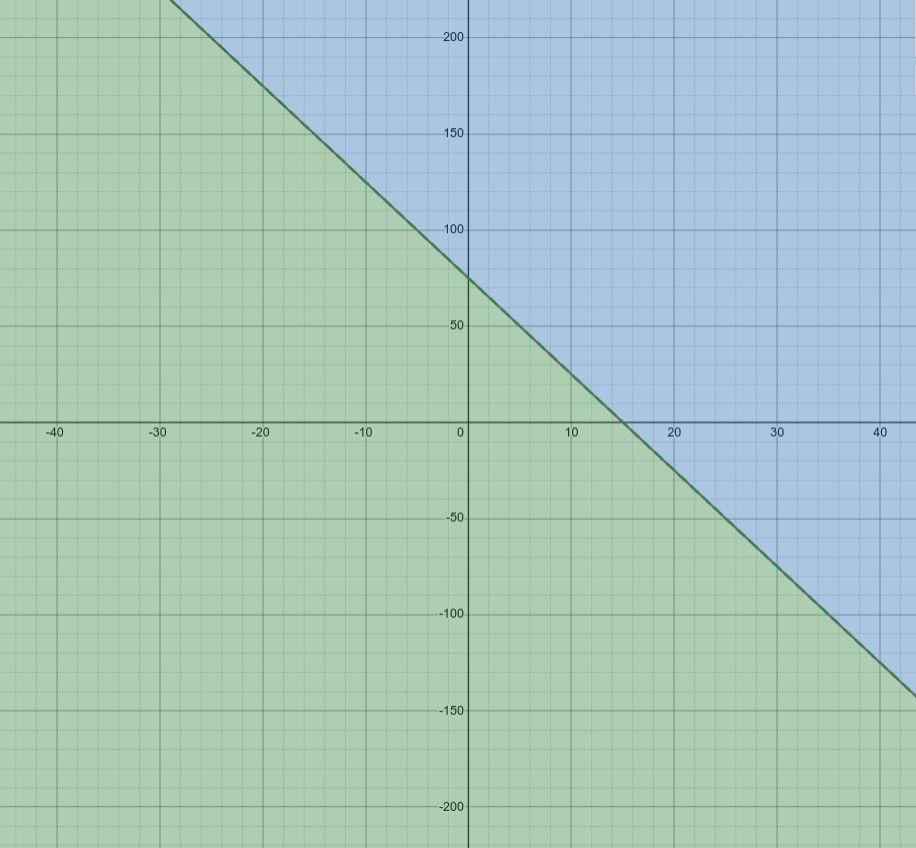

← Back
Een simpel dynamisch‑systeemmodel voor AOW‑leeftijd × migratie × arbeidsparticipatie
TL;DR: beleidsonderdelen grijpen in elkaar (begroting, demografie, capaciteit). Meestal is er geen één magische knop, maar wel een lijn van combinaties waarop het systeem in evenwicht blijft. Hieronder tonen we zo’n lijn (de null‑lijn) met een eenvoudig model. Tip: termen met een stippellijn kun je aanklikken voor uitleg.
Note: Een deel van de tekst op deze site is gegenereerd met AI op met een voice-prompt waarin ik mijn ideeen uitlegde. Ik heb nog niet nagelezen of AI precies begreep wat ik bedoelde, er kunnen dus fouten of inconsistencies zijn.
🌍 Deel 1 — Democratie en waarom ze wiskundig niet altijd “werkt”
In een democratie stemt de meerderheid, en wat de meerderheid wil, gebeurt meestal.
Dat klinkt eerlijk — maar wiskundig gezien hoeft wat de meerderheid wil niet hetzelfde te zijn als wat het systeem stabiel houdt.
1.1 Democratie in het kort
Democratie is een procedure om gezamenlijke keuzes te maken uit verschillende voorkeuren. Kiezers rangschikken; een verkiezing/coalitie zet die rangordes om in beleid. Dat waarborgt legitimiteit, niet automatisch de “beste” uitkomst.
In gewone taal: stemmen bepaalt wie beslist, niet dat er vanzelf de wiskundig/financieel optimale combinatie uit rolt.
1.2 Waarom het soms “wiskundig niet werkt”
Voorkeuren optellen kent harde grenzen (denk aan Arrow/Condorcet): er bestaat geen perfecte stemregel die altijd eerlijk én consistent is. Daarnaast dwingen randvoorwaarden (begroting, bevolkingsopbouw, productiviteit) het beleid in een kleiner haalbaarheidsgebied.
In gewone taal: zelfs als veel losse plannen populair zijn, kunnen ze samen niet kloppen met de rekenkundige werkelijkheid.
1.3 Wat betekent dat concreet?
➡️ In systeemtermen:
De samenleving is een dynamisch systeem met variabelen (zoals leeftijdsverdeling, migratie, belastinginkomsten, en productiviteit).
Beleid verandert de waarden van die variabelen.
Wanneer mensen op eigenbelang stemmen (dus: wat nú goed is voor henzelf), negeren ze de terugkoppelingen en vertragingen die dat beleid op het systeem heeft.
Kort gezegd:
> Democratie is lokaal stabiel (goed voor de meerderheid op korte termijn),
> maar kan globaal instabiel zijn (leidend tot instorting van het systeem op lange termijn).
Dat is waarom het wiskundig niet werkt als mensen puur vanuit eigenbelang stemmen.
💰 Deel 2 — Waarom stemmen op eigenbelang gevaarlijk is
Stel dat elke groep alleen stemt voor wat voor hén het beste is:
- Jongeren stemmen voor lage belastingen, hoge lonen.
- Ouderen stemmen voor een lage AOW-leeftijd en hoge pensioenen.
- Bedrijven stemmen voor lage winstbelasting.
- Milieugroepen stemmen voor dure klimaatmaatregelen.
Allemaal logisch — voor elk individu.
Maar het probleem is dat die belangen samen één systeem vormen.
Wat voor één groep gunstig is, kan een feedback effect hebben dat het hele systeem schaadt.
> Eigenbelang is geen probleem in één stem, maar in het totaal van miljoenen stemmen zonder systeembegrip.
Beleid heeft kruisverbanden en bijwerkingen. Als iedereen vooral op eigen voordeel stemt zonder die koppelingen te zien, kan de som van prima deelkeuzes eindigen in een slecht systeemresultaat (tekorten, lagere kwaliteit van voorzieningen).
In gewone taal: vijf keer “lekker voor mij” kan samen uitkomen op “slecht voor ons allemaal”.
👴 Deel 3 — De AOW-leeftijd als voorbeeld van een dynamisch systeem
Stel een versimpeld model met drie variabelen:
- Leeftijdsverdeling (L) — hoeveel ouderen vs werkenden.
- Migratie (M) — hoeveel nieuwe werkenden erbij komen.
- Productiviteit (P) — hoeveel één werkende gemiddeld verdient (of produceert).
De AOW-leeftijd (A) is afhankelijk van deze drie:
Als L stijgt (meer ouderen), dan moet óf M stijgen, óf A stijgen, óf P stijgen — anders stort het systeem economisch in.
We kunnen dat zien als een 3D-ruimte (L, M, A).
Er bestaat één lijn van stabiele combinaties — dat noemen we het haalbaarheidsgebied of de equilibrium line.
➡️ Alles wat op die lijn ligt, houdt de economie stabiel.
➡️ Alles eronder leidt tot tekorten (te veel ouderen, te weinig werkenden).
➡️ Alles erboven is politiek onhaalbaar (mensen moeten te lang werken of migratie stijgt te snel).
Hieronder zie je een voorbeeld in 2D om het duidelijk te maken.

Die diagonale lijn is dus de set van oplossingen waarbij het systeem nog werkt.
Bij vergrijzing stijgt de uitkeringsdruk. Als veel kiezers een lagere AOW‑leeftijd willen, is er een compensatie nodig (meer werkenden, hogere participatie/productiviteit, of migratie). Zonder die compensatie moet iedere werkende relatief meer uitkeringen financieren.
In gewone taal: als er meer ontvangers en minder betalers zijn, moet je óf meer betalers krijgen óf minder uitkeren. Anders kloppen de rekenregels niet.
⚖️ Deel 4 — Hoe partijen daarin kunnen bewegen en waarom links of rechts niet uitmaakt.
- Rechtse partijen: willen lage migratie (M↓) én lage AOW-leeftijd (A↓).
→ Dat duwt het systeem onder de stabiele lijn → onhoudbaar.
- Linkse partijen: willen hogere migratie (M↑) en hogere AOW-leeftijd (A↑).
→ Dat blijft dichter bij de stabiele lijn, maar botst met kiezersbelang omdat het politiek onhaalbaar is (mensen moeten te lang werken of migratie stijgt te snel).
Met andere woorden:
> De “stabiele lijn” is de wiskundige realiteit,
> maar partijen bewegen vaak langs de assen in plaats van op de lijn —
> omdat ze stemmen willen winnen, niet systemen stabiel houden.
📊 Deel 5 — Het JA21-voorbeeld
Een concreet voorbeeld laat zien hoe politiek afwijkt van systeemdenken.
Volgens nieuwsberichten en CPB-analyses:
- In hun partijprogramma zegt JA21: winstbelasting 20%.
→ Tegen het CPB zeggen ze: 22%.
- In het programma: vliegbelasting afschaffen.
→ Tegen het CPB: behouden.
- Over pensioenleeftijd: in programma niets,
→ Tegen het CPB: verhogen.
👉 Wat dit laat zien:
Ze proberen tegelijk geloofwaardig te zijn voor kiezers (korte termijn eigenbelang)
én voor het CPB (lange termijn houdbaarheid) — maar dat zijn twee verschillende punten in het systeem, niet één stabiele oplossing.
In gewone taal: voor een doorrekening moet je met één consistente set cijfers komen die door alle koppelingen heen klopt. Dat dwingt eerlijkheid over trade‑offs.
🧠 Deel 6 — Wat ik met de visualisatie wil laten zien
Wat ik laat zien:
Een abstract maar begrijpelijk dynamisch model van politieke beslissingen.
Wat ik ermee wil aantonen:
- Dat beleid niet in losse punten moet worden gezien, maar als delen van een systeem.
- Dat de “beste” oplossing vaak een smalle lijn van evenwicht is — niet één partijstandpunt.
- Dat democratie pas écht werkt als mensen begrijpen dat hun stem invloed heeft op het systeemgedrag, niet alleen op hun portemonnee.
- Dat de filosofische strijd tussen links en rechts secundair zou moeten zijn in de politiek. De nadruk moet liggen op het in kaart brengen van Dynamische Systemen en de factoren die erbij betrokken zijn. Niet de exacte werking, niet alle factoren exact. De methode is wetenschappelijk, maar het doel is beschrijven, niet voorspellen. Wat je dan ziet is dat balans belangrijker is om gecalculeerde beslissingen te maken.
> Je kunt niet kiezen voor “geen migratie” én “lage AOW-leeftijd” én “lage belasting”
> — want dat ligt buiten het haalbaarheidsgebied van het systeem.
✳️ Deel 7 - De visualisatie (NIET AF, INSTABIEL - NEGEER VOOR NU MAAR JE MAG WEL ERMEE SPELEN)
Wat ik bewijs:
Dat een samenleving met democratische stemmers die puur op eigenbelang stemmen, vanzelf buiten haar economisch evenwicht beweegt.
Alleen systeemdenken (zoals in dynamical systems theory) kan verklaren waar het evenwicht ligt — en waarom politiek zonder dat inzicht wiskundig instabiel wordt.
7.1 Wat je hieronder ziet (doel van de visualisatie)
- Black‑box claim: voor vaste participatie
L is er in het vlak (AOW, migratie) een null‑lijn met F(A,M,L)=0 (begroting in evenwicht).
- Interpretatie: punten naast die lijn vragen om compensatie (meer/ minder migratie, andere AOW‑leeftijd of andere knoppen).
- Beperking: didactisch model; de echte wereld is rijker (cohorten, gedrag, sectorale knelpunten).
In gewone taal: de zwarte lijn is de balans‑lijn: combinaties waar de simpele rekensom uitkomt. Eraf? Dan moet je elders draaien.
7) Hoe lees je de plot?
- De kaart toont
F(A,M,L) = begrotingssaldo in dit model. Blauw ≈ overschot (F>0), rood ≈ tekort (F<0).
- De zwarte lijn is de null‑lijn (
F=0): combinaties waar het saldo precies in evenwicht is.
- De witte stip is jouw keuze. Met Snap naar null‑lijn projecteer je je AOW‑keuze op de dichtstbijzijnde evenwichtige migratie.
- De schuif
L (arbeidsparticipatie) staat voor het aandeel van de beroepsgeschikte bevolking dat werkt; verander je L, dan verschuift de hele balans‑lijn.
In gewone taal: blauw = ruimte over, rood = geld tekort. De zwarte lijn is “precies goed”.
8) Wat betekenen alle knoppen, kleuren en symbolen?
- AOW‑leeftijd (A): wanneer recht op AOW start. Lager A → meer ontvangers.
- Netto migratie (M): jaarlijkse instroom minus uitstroom als % van de bevolking. Positief M → meestal meer potentiële werkenden.
- Arbeidsparticipatie (L): % van 15–67 dat werkt. Hoger L → meer betalers.
- F (saldo): simpele rekensom:
F = inkomsten − uitgaven. F>0 overschot (blauw), F<0 tekort (rood).
- τ (tau): gemiddelde belastingdruk per werkende.
- p: uitgaven per gepensioneerde (relatief).
- G₀: overige vaste overheidsuitgaven.
- kA, kM, kR: vereenvoudigde gevoeligheden: hoe A en M doorwerken in de verhouding werkenden/gepensioneerden.
- Null‑lijn: alle (A,M) combinaties met
F=0 (evenwicht) voor de gekozen L.
- 2D‑slice: we kijken naar het vlak (A,M) bij vaste
L (jij bedient L met de schuif).
- 3D‑plot: het hele oppervlak
F(A,M) voor de gekozen L; het semitransparante vlak is F=0.
In gewone taal: A = wanneer je met pensioen mag, M = hoeveel mensen erbij komen, L = hoeveel van de mensen werken. F zegt of de rekensom uitkomt.